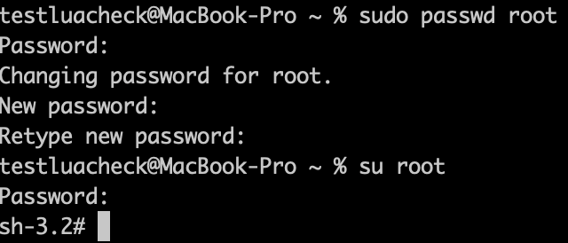

<!DOCTYPE html>


<html lang="en">
  

    <head>
      <meta charset="utf-8" />
        
      <meta
        name="viewport"
        content="width=device-width, initial-scale=1, maximum-scale=1"
      />
      <title>【OS】Shell on UNIX-like systems |  半个出家人</title>
  <meta name="generator" content="hexo-theme-ayer">
      
      <link rel="shortcut icon" href="/img/circle_image.png" />
       
<link rel="stylesheet" href="/dist/main.css">

      
<link rel="stylesheet" href="/css/fonts/remixicon.css">

      
<link rel="stylesheet" href="/css/custom.css">
 
      <script src="https://cdn.staticfile.org/pace/1.2.4/pace.min.js"></script>
       
 

      <link
        rel="stylesheet"
        href="https://cdn.jsdelivr.net/npm/@sweetalert2/theme-bulma@5.0.1/bulma.min.css"
      />
      <script src="https://cdn.jsdelivr.net/npm/sweetalert2@11.0.19/dist/sweetalert2.min.js"></script>

      <!-- mermaid -->
      
      <style>
        .swal2-styled.swal2-confirm {
          font-size: 1.6rem;
        }
      </style>
    <link rel="alternate" href="/atom.xml" title="半个出家人" type="application/atom+xml">
</head>
  </html>
</html>


<body>
  <div id="app">
    
      
    <main class="content on">
      <section class="outer">
  <article
  id="post-TestSubFolder-OS-Shell-on-UNIX-like-systems"
  class="article article-type-post"
  itemscope
  itemprop="blogPost"
  data-scroll-reveal
>
  <div class="article-inner">
    
    <header class="article-header">
       
<h1 class="article-title sea-center" style="border-left:0" itemprop="name">
  【OS】Shell on UNIX-like systems
</h1>
 

      
    </header>
     
    <div class="article-meta">
      <a href="/2020/10/25/TestSubFolder-OS-Shell-on-UNIX-like-systems/" class="article-date">
  <time datetime="2020-10-24T17:47:00.000Z" itemprop="datePublished">2020-10-25</time>
</a> 
  <div class="article-category">
    <a class="article-category-link" href="/categories/%E4%BB%8E%E7%A1%AC%E4%BB%B6%E5%88%B0OS/">从硬件到OS</a>
  </div>
  
<div class="word_count">
    <span class="post-time">
        <span class="post-meta-item-icon">
            <i class="ri-quill-pen-line"></i>
            <span class="post-meta-item-text"> Word count:</span>
            <span class="post-count">2.1k</span>
        </span>
    </span>

    <span class="post-time">
        &nbsp; | &nbsp;
        <span class="post-meta-item-icon">
            <i class="ri-book-open-line"></i>
            <span class="post-meta-item-text"> Reading time≈</span>
            <span class="post-count">8 min</span>
        </span>
    </span>
</div>
 
    </div>
      
    <div class="tocbot"></div>


  
    <div class="article-entry" itemprop="articleBody">
       
  <h1 id="Shell-overview"><a href="#Shell-overview" class="headerlink" title="Shell overview"></a>Shell overview</h1><p>shell即“壳”，是用户和操作系统（系统内核）之间的接口程序，是个命令解释程序，拥有自己内建的 shell 命令集。提示符下输入的每个命令都由shell先解释然后传给操作系统内核。</p>
<p>Linux下有Bash、Zsh等，Windows下有CMD、PowerShell等，都是Shell。</p>
<h2 id="Linux中Shell的类型"><a href="#Linux中Shell的类型" class="headerlink" title="Linux中Shell的类型"></a>Linux中Shell的类型</h2><p>Linux 中的 shell 有很多类型，其中最常用的几种是: Bourne shell (sh)、C shell (csh) 和 Korn shell (ksh), 各有优缺点。Bourne shell 是 UNIX 最初使用的 shell，并且在每种 UNIX 上都可以使用, 在 shell 编程方面相当优秀，但在处理与用户的交互方面做得不如其他几种shell。Linux 操作系统缺省的 shell 是Bourne Again shell，它是 Bourne shell 的扩展，简称 Bash，与 Bourne shell 完全向后兼容，并且在Bourne shell 的基础上增加、增强了很多特性。Bash放在/bin/bash中，它有许多特色，可以提供如命令补全、命令编辑和命令历史表等功能，它还包含了很多 C shell 和 Korn shell 中的优点，有灵活和强大的编程接口，同时又有很友好的用户界面。</p>
<p><a href="https://blog.csdn.net/MonMama/article/details/53390610" target="_blank" rel="noopener">https://blog.csdn.net/MonMama/article/details/53390610</a><br><a href="https://blog.csdn.net/wenlifu71022/article/details/4069929" target="_blank" rel="noopener">https://blog.csdn.net/wenlifu71022/article/details/4069929</a></p>
<h1 id="查找命令"><a href="#查找命令" class="headerlink" title="查找命令"></a>查找命令</h1><p><a href="http://www.ruanyifeng.com/blog/2009/10/5_ways_to_search_for_files_using_the_terminal.html" target="_blank" rel="noopener">http://www.ruanyifeng.com/blog/2009/10/5_ways_to_search_for_files_using_the_terminal.html</a></p>
<h1 id="grep命令"><a href="#grep命令" class="headerlink" title="grep命令"></a>grep命令</h1><h1 id="权限问题"><a href="#权限问题" class="headerlink" title="权限问题"></a>权限问题</h1><h2 id="管理者权限"><a href="#管理者权限" class="headerlink" title="管理者权限"></a>管理者权限</h2><p><strong>sudo命令</strong> - 以系统管理者的身份执行指令，也就是说，经由 sudo 所执行的指令就好像是 root 亲自执行。<br>使用权限：在 /etc/sudoers 中有出现的使用者。</p>
<p><strong>su</strong>命令为切换用户的命令。</p>
<p>切换为root用户执行命令：<br> <code>sudo su root</code>或·<code>sudo su</code>: 切换到root用户，不改变当前变量<br> <code>sudo su - root</code>或·<code>sudo su -</code>: 切换到root用户，并获得root的环境变量及执行权限<br>只要当前用户为管理员用户，即可使用sudo切换到root用户，此时输入的密码为当前管理员用户的密码。</p>
<p>若直接使用命令<code>su root</code>，则需要输入的密码为root用户的密码。输入当前管理员用户的密码会返回 su: Sorry。<br>可以使用管理员权限修改root用户的密码后，再执行<code>su root</code>命令，这样输入刚刚修改好的root密码即可切换到root用户如下图：</p>
<p></p>
<h2 id="查看"><a href="#查看" class="headerlink" title="查看"></a>查看</h2><figure class="highlight bash"><table><tr><td class="gutter"><pre><span class="line">1</span><br></pre></td><td class="code"><pre><span class="line">ls -l 文件夹</span><br></pre></td></tr></table></figure>
<p>权限说明一共10位: drwxrwxrwx<br>第一位 - 文件类型，” + “代表目录，” - “代表非目录。<br>2-4位 - 所有者user的权限说明<br>5-7位 - 组群group的权限说明<br>8-10位 - 其他人other的权限说明</p>
<p>r代表可读权限，w代表可写权限，x代表可执行权限。</p>
<blockquote>
<p>MacOS上，权限说明后可能有 + 或 @<br>‘+’ 表示扩展属性(extended attributes)<br>‘@’ 表示扩展安全信息(extended security information)<br>详情可通过命令 ls -le 或 ls -l@ 查看</p>
</blockquote>
<h2 id="修改权限"><a href="#修改权限" class="headerlink" title="修改权限"></a>修改权限</h2><figure class="highlight bash"><table><tr><td class="gutter"><pre><span class="line">1</span><br></pre></td><td class="code"><pre><span class="line">chmod o w xxx.xxx</span><br></pre></td></tr></table></figure>
<p>授予其他人写xxx.xxx这个文件的权限</p>
<figure class="highlight bash"><table><tr><td class="gutter"><pre><span class="line">1</span><br></pre></td><td class="code"><pre><span class="line">chmod go-rw xxx.xxx</span><br></pre></td></tr></table></figure>
<p>删除xxx.xxx中组群和其他人的读和写的权限</p>
<blockquote>
<p>u 代表所有者（user）<br>g 代表所有者所在的组群（group）<br>o 代表其他人，但不是u和g （other）<br>a 代表全部的人，也就是包括u，g和o</p>
</blockquote>
<p>r w x可以换成数字表示：<br>r 对应 4， w 对应 2， x 对应 1<br>rwx 或 - 的任意组合对应的数字是唯一的，所以可用一个数字表示一组rwx权限。<br>如 7 = 4+2+1 表示赋予目录可读可写可执行权限</p>
<figure class="highlight bash"><table><tr><td class="gutter"><pre><span class="line">1</span><br></pre></td><td class="code"><pre><span class="line">sudo chmod  -R 777 /var/<span class="built_in">test</span></span><br></pre></td></tr></table></figure>
<h1 id="环境变量相关"><a href="#环境变量相关" class="headerlink" title="环境变量相关"></a>环境变量相关</h1><p>环境变量是在操作系统中一个具有特定名字的对象，它包含了一个或多个应用程序将使用到的信息。Linux是一个多用户的操作系统，每个用户登录系统时都会有一个专用的运行环境。这个默认环境就是一组环境变量的定义。每个用户都可以通过修改环境变量的方式对自己的运行环境进行配置。</p>
<h2 id="环境变量分类"><a href="#环境变量分类" class="headerlink" title="环境变量分类"></a>环境变量分类</h2><h3 id="对所有用户生效的永久性变量（系统级）"><a href="#对所有用户生效的永久性变量（系统级）" class="headerlink" title="对所有用户生效的永久性变量（系统级）"></a>对所有用户生效的永久性变量（系统级）</h3><p>位置：/etc/profile<br>添加方式：vim打开/etc/ profile文件，用export指令添加环境变量。<br>调用<code>source /etc/profile</code>才能立即生效，否则下次进入此用户生效。</p>
<h3 id="对单一用户生效的永久性变量（用户级）"><a href="#对单一用户生效的永久性变量（用户级）" class="headerlink" title="对单一用户生效的永久性变量（用户级）"></a>对单一用户生效的永久性变量（用户级）</h3><p>设置方法：在用户主目录”~”下的隐藏文件 “.bashrc”中添加自己想要的环境变量。<br>同样调用<code>source ./.bashrc</code>该文件才会生效。否则只能在下次重进此用户时才能生效。</p>
<blockquote>
<ul>
<li>~/.bash_profile是交互式login方式进入bash shell运行，只会在用户登录的时候读取一次。</li>
<li>~/ .bashrc是交互式non-login方式进入bash shell运行，在每次打开终端进行一次新的会话时都会读取。<h3 id="临时有效的环境变量（只对当前shell有效）"><a href="#临时有效的环境变量（只对当前shell有效）" class="headerlink" title="临时有效的环境变量（只对当前shell有效）"></a>临时有效的环境变量（只对当前shell有效）</h3>此类环境变量只对当前的shell有效。当我们退出登录或者关闭终端再重新打开时，这个环境变量就会消失。是临时的。<br>设置方法：直接使用export指令添加。 如<code>export PATH=/usr/local/bin:$PATH</code></li>
</ul>
</blockquote>
<h2 id="常用环境变量"><a href="#常用环境变量" class="headerlink" title="常用环境变量"></a>常用环境变量</h2><ul>
<li>PPID: 是当前进程的父进程的PID</li>
<li>PWD: 当前工作目录。命令pwd的输出该变量值。</li>
<li>RANDOM: 随机数变量。每次引用这个变量会得到一个0~32767的随机数。</li>
<li>SECONDS: 脚本已经运行的时间（以秒为单位）</li>
<li><p>PATH 指定命令的搜索路径。通过设置环境变量PATH可以让我们运行程序或指令更加方便。</p>
<blockquote>
<p>每一个冒号都是一个路径，这些搜索路径都是一些可以找到可执行程序的目录列表。当我们输入一个指令时，shell会先检查命令是否是内部命令，不是的话会再检查这个命令是否是一个应用程序。然后shell会试着从搜索路径，即PATH中寻找这些应用程序。如果shell在这些路径目录里没有找到可执行文件。则会报错。若找到，shell内部命令或应用程序将被分解为系统调用并传给Linux内核。</p>
</blockquote>
</li>
<li><p>SHELL  指当前用户用的是哪种shell</p>
</li>
</ul>
<h2 id="设置环境变量常用的几个指令"><a href="#设置环境变量常用的几个指令" class="headerlink" title="设置环境变量常用的几个指令"></a>设置环境变量常用的几个指令</h2><ul>
<li>echo - 查看显示环境变量，变量使用时要加上符号“$”<br>  <code>echo $PATH</code></li>
<li>export - 设置新的环境变量<br><code>export PATH=/usr/local/bin:$PATH</code></li>
<li>修改环境变量 - 修改环境变量没有指令，可以直接使用环境变量名进行修改。<br><code>MYNAME=&quot;Prin&quot;</code></li>
<li>env  查看所有环境变量</li>
<li>set  查看本地定义的所有shell变量</li>
<li>unset 删除一个环境变量</li>
<li>readonly 设置只读环境变量<br><code>readonly MYNAME</code></li>
</ul>
<h3 id="变量的引用"><a href="#变量的引用" class="headerlink" title="变量的引用"></a>变量的引用</h3><figure class="highlight bash"><table><tr><td class="gutter"><pre><span class="line">1</span><br><span class="line">2</span><br><span class="line">3</span><br><span class="line">4</span><br></pre></td><td class="code"><pre><span class="line"><span class="variable">$variable</span></span><br><span class="line"><span class="variable">$&#123;variable&#125;</span></span><br><span class="line"><span class="string">"<span class="variable">$variable</span>"</span></span><br><span class="line"><span class="string">"<span class="variable">$&#123;variable&#125;</span>"</span></span><br></pre></td></tr></table></figure>
<h3 id="命令替换：-command"><a href="#命令替换：-command" class="headerlink" title="命令替换：$(command)"></a>命令替换：$(command)</h3><p>命令替换的目的是获取命令的输出、为变量赋值，或对命令的输出做进一步的处理。</p>
<h1 id="进程相关技巧"><a href="#进程相关技巧" class="headerlink" title="进程相关技巧"></a>进程相关技巧</h1><figure class="highlight bash"><table><tr><td class="gutter"><pre><span class="line">1</span><br></pre></td><td class="code"><pre><span class="line">ps -A | grep name</span><br></pre></td></tr></table></figure>
<p><a href="https://www.runoob.com/linux/linux-comm-grep.html" target="_blank" rel="noopener">https://www.runoob.com/linux/linux-comm-grep.html</a><br>grep 命令用于查找文件里符合条件的字符串。上条命令可用于查找包含特定字符串的进程</p>
<p>如果出现进程未响应的状况，则查找到进程的PID后，可调用<code>kill -9 PID</code>强制终止进程</p>
<h1 id="压缩解压"><a href="#压缩解压" class="headerlink" title="压缩解压"></a>压缩解压</h1><h2 id="概览"><a href="#概览" class="headerlink" title="概览"></a>概览</h2><p>.tar<br>解包：tar xvf FileName.tar<br>打包：tar cvf FileName.tar DirName<br>（注：tar是打包，不是压缩！）</p>
<p>.gz<br>解压1：gunzip FileName.gz<br>解压2：gzip -d FileName.gz<br>压缩：gzip FileName<br>.tar.gz 和 .tgz<br>解压：tar zxvf FileName.tar.gz<br>压缩：tar zcvf FileName.tar.gz DirName</p>
<p>.bz2<br>解压1：bzip2 -d FileName.bz2<br>解压2：bunzip2 FileName.bz2<br>压缩： bzip2 -z FileName<br>.tar.bz2<br>解压：tar jxvf FileName.tar.bz2<br>压缩：tar jcvf FileName.tar.bz2 DirName</p>
<p>.bz<br>解压1：bzip2 -d FileName.bz<br>解压2：bunzip2 FileName.bz<br>压缩： 未知<br>.tar.bz<br>解压：tar jxvf FileName.tar.bz<br>压缩： 未知</p>
<p>.Z<br>解压：uncompress FileName.Z<br>压缩：compress FileName<br>.tar.Z<br>解压：tar Zxvf FileName.tar.Z<br>压缩：tar Zcvf FileName.tar.Z DirName</p>
<p>.zip<br>解压：unzip FileName.zip<br>压缩：zip FileName.zip DirName</p>
<p>.rar<br>解压：rar x FileName.rar<br>压缩：rar a FileName.rar DirName</p>
<h2 id="zip-unzip-命令"><a href="#zip-unzip-命令" class="headerlink" title="zip / unzip 命令"></a>zip / unzip 命令</h2><p>unzip指令 格式如下：</p>
<p>//待更</p>
<p>-d 目录名    将压缩文件解压到指定目录下</p>
<h1 id="拓展延伸-Console-TTY等"><a href="#拓展延伸-Console-TTY等" class="headerlink" title="拓展延伸 Console, TTY等"></a>拓展延伸 Console, TTY等</h1><p><a href="https://www.zhihu.com/question/26860370" target="_blank" rel="noopener">https://www.zhihu.com/question/26860370</a></p>
<h2 id="ref"><a href="#ref" class="headerlink" title="ref"></a>ref</h2><p><a href="https://www.iteye.com/blog/henry-cong-1060014" target="_blank" rel="noopener">https://www.iteye.com/blog/henry-cong-1060014</a><br><a href="https://www.jianshu.com/p/09f521c60c30" target="_blank" rel="noopener">https://www.jianshu.com/p/09f521c60c30</a><br><a href="https://blog.csdn.net/Axela30W/article/details/78981749" target="_blank" rel="noopener">https://blog.csdn.net/Axela30W/article/details/78981749</a><br><a href="https://blog.csdn.net/huayangshiboqi/article/details/80150842" target="_blank" rel="noopener">https://blog.csdn.net/huayangshiboqi/article/details/80150842</a></p>
 
      <!-- reward -->
      
      <div id="reword-out">
        <div id="reward-btn">
          Donate
        </div>
      </div>
      
    </div>
    

    <!-- copyright -->
    
    <div class="declare">
      <ul class="post-copyright">
        <li>
          <i class="ri-copyright-line"></i>
          <strong>Copyright： </strong>
          
          Copyright is owned by the author. For commercial reprints, please contact the author for authorization. For non-commercial reprints, please indicate the source.
          
        </li>
      </ul>
    </div>
    
    <footer class="article-footer">
       
<div class="share-btn">
      <span class="share-sns share-outer">
        <i class="ri-share-forward-line"></i>
        分享
      </span>
      <div class="share-wrap">
        <i class="arrow"></i>
        <div class="share-icons">
          
          <a class="weibo share-sns" href="javascript:;" data-type="weibo">
            <i class="ri-weibo-fill"></i>
          </a>
          <a class="weixin share-sns wxFab" href="javascript:;" data-type="weixin">
            <i class="ri-wechat-fill"></i>
          </a>
          <a class="qq share-sns" href="javascript:;" data-type="qq">
            <i class="ri-qq-fill"></i>
          </a>
          <a class="douban share-sns" href="javascript:;" data-type="douban">
            <i class="ri-douban-line"></i>
          </a>
          <!-- <a class="qzone share-sns" href="javascript:;" data-type="qzone">
            <i class="icon icon-qzone"></i>
          </a> -->
          
          <a class="facebook share-sns" href="javascript:;" data-type="facebook">
            <i class="ri-facebook-circle-fill"></i>
          </a>
          <a class="twitter share-sns" href="javascript:;" data-type="twitter">
            <i class="ri-twitter-fill"></i>
          </a>
          <a class="google share-sns" href="javascript:;" data-type="google">
            <i class="ri-google-fill"></i>
          </a>
        </div>
      </div>
</div>

<div class="wx-share-modal">
    <a class="modal-close" href="javascript:;"><i class="ri-close-circle-line"></i></a>
    <p>扫一扫，分享到微信</p>
    <div class="wx-qrcode">
      
    </div>
</div>

<div id="share-mask"></div>  
  <ul class="article-tag-list" itemprop="keywords"><li class="article-tag-list-item"><a class="article-tag-list-link" href="/tags/Linux/" rel="tag">Linux</a></li><li class="article-tag-list-item"><a class="article-tag-list-link" href="/tags/MacOS/" rel="tag">MacOS</a></li><li class="article-tag-list-item"><a class="article-tag-list-link" href="/tags/OS/" rel="tag">OS</a></li><li class="article-tag-list-item"><a class="article-tag-list-link" href="/tags/Shell/" rel="tag">Shell</a></li><li class="article-tag-list-item"><a class="article-tag-list-link" href="/tags/Unix/" rel="tag">Unix</a></li></ul>

    </footer>
  </div>

   
  <nav class="article-nav">
    
      <a href="/2020/10/25/U3D-Draw-Call-Batching/" class="article-nav-link">
        <strong class="article-nav-caption">上一篇</strong>
        <div class="article-nav-title">
          
            【渲染】Draw Call与Batching(合批)
          
        </div>
      </a>
    
    
      <a href="/2020/10/03/TestSubFolder-Lua-installation-of-luacheck/" class="article-nav-link">
        <strong class="article-nav-caption">下一篇</strong>
        <div class="article-nav-title">Win10系统下Lua及Luacheck环境配置</div>
      </a>
    
  </nav>

  
   
    
    <script src="https://cdn.staticfile.org/twikoo/1.4.18/twikoo.all.min.js"></script>
    <div id="twikoo" class="twikoo"></div>
    <script>
        twikoo.init({
            envId: ""
        })
    </script>
 
</article>

</section>
      <footer class="footer">
  <div class="outer">
    <ul>
      <li>
        Copyrights &copy;
        2015-2023
        <i class="ri-heart-fill heart_icon"></i> Prin
      </li>
    </ul>
    <ul>
      <li>
        
      </li>
    </ul>
    <ul>
      <li>
        
        
        <span>
  <span><i class="ri-user-3-fill"></i>Visitors:<span id="busuanzi_value_site_uv"></span></span>
  <span class="division">|</span>
  <span><i class="ri-eye-fill"></i>Views:<span id="busuanzi_value_page_pv"></span></span>
</span>
        
      </li>
    </ul>
    <ul>
      
    </ul>
    <ul>
      
    </ul>
    <ul>
      <li>
        <!-- cnzz统计 -->
        
        <script type="text/javascript" src='https://s9.cnzz.com/z_stat.php?id=1278069914&amp;web_id=1278069914'></script>
        
      </li>
    </ul>
  </div>
</footer>    
    </main>
    <div class="float_btns">
      <div class="totop" id="totop">
  <i class="ri-arrow-up-line"></i>
</div>

<div class="todark" id="todark">
  <i class="ri-moon-line"></i>
</div>

    </div>
    <aside class="sidebar on">
      <button class="navbar-toggle"></button>
<nav class="navbar">
  
  <div class="logo">
    <a href="/"></a>
  </div>
  
  <ul class="nav nav-main">
    
    <li class="nav-item">
      <a class="nav-item-link" href="/">主页</a>
    </li>
    
    <li class="nav-item">
      <a class="nav-item-link" href="/archives">归档</a>
    </li>
    
    <li class="nav-item">
      <a class="nav-item-link" href="/categories">分类</a>
    </li>
    
    <li class="nav-item">
      <a class="nav-item-link" href="/tags">标签</a>
    </li>
    
    <li class="nav-item">
      <a class="nav-item-link" href="/friends">友链</a>
    </li>
    
    <li class="nav-item">
      <a class="nav-item-link" href="/about">关于我</a>
    </li>
    
    <li class="nav-item">
      <a class="nav-item-link" href="/categories/Unreal">虚幻引擎</a>
    </li>
    
  </ul>
</nav>
<nav class="navbar navbar-bottom">
  <ul class="nav">
    <li class="nav-item">
      
      <a class="nav-item-link nav-item-search"  title="Search">
        <i class="ri-search-line"></i>
      </a>
      
      
      <a class="nav-item-link" target="_blank" href="/atom.xml" title="RSS Feed">
        <i class="ri-rss-line"></i>
      </a>
      
    </li>
  </ul>
</nav>
<div class="search-form-wrap">
  <div class="local-search local-search-plugin">
  <input type="search" id="local-search-input" class="local-search-input" placeholder="Search...">
  <div id="local-search-result" class="local-search-result"></div>
</div>
</div>
    </aside>
    <div id="mask"></div>

<!-- #reward -->
<div id="reward">
  <span class="close"><i class="ri-close-line"></i></span>
  <p class="reward-p"><i class="ri-cup-line"></i>请我喝杯咖啡吧~</p>
  <div class="reward-box">
    
    <div class="reward-item">
      
      <span class="reward-type">支付宝</span>
    </div>
    
    
    <div class="reward-item">
      
      <span class="reward-type">微信</span>
    </div>
    
  </div>
</div>
    
<script src="/js/jquery-3.6.0.min.js"></script>
 
<script src="/js/lazyload.min.js"></script>

<!-- Tocbot -->
 
<script src="/js/tocbot.min.js"></script>

<script>
  tocbot.init({
    tocSelector: ".tocbot",
    contentSelector: ".article-entry",
    headingSelector: "h1, h2, h3, h4, h5, h6",
    hasInnerContainers: true,
    scrollSmooth: true,
    scrollContainer: "main",
    positionFixedSelector: ".tocbot",
    positionFixedClass: "is-position-fixed",
    fixedSidebarOffset: "auto",
  });
</script>

<script src="https://cdn.staticfile.org/jquery-modal/0.9.2/jquery.modal.min.js"></script>
<link
  rel="stylesheet"
  href="https://cdn.staticfile.org/jquery-modal/0.9.2/jquery.modal.min.css"
/>
<script src="https://cdn.staticfile.org/justifiedGallery/3.8.1/js/jquery.justifiedGallery.min.js"></script>

<script src="/dist/main.js"></script>

<!-- ImageViewer -->
 <!-- Root element of PhotoSwipe. Must have class pswp. -->
<div class="pswp" tabindex="-1" role="dialog" aria-hidden="true">

    <!-- Background of PhotoSwipe. 
         It's a separate element as animating opacity is faster than rgba(). -->
    <div class="pswp__bg"></div>

    <!-- Slides wrapper with overflow:hidden. -->
    <div class="pswp__scroll-wrap">

        <!-- Container that holds slides. 
            PhotoSwipe keeps only 3 of them in the DOM to save memory.
            Don't modify these 3 pswp__item elements, data is added later on. -->
        <div class="pswp__container">
            <div class="pswp__item"></div>
            <div class="pswp__item"></div>
            <div class="pswp__item"></div>
        </div>

        <!-- Default (PhotoSwipeUI_Default) interface on top of sliding area. Can be changed. -->
        <div class="pswp__ui pswp__ui--hidden">

            <div class="pswp__top-bar">

                <!--  Controls are self-explanatory. Order can be changed. -->

                <div class="pswp__counter"></div>

                <button class="pswp__button pswp__button--close" title="Close (Esc)"></button>

                <button class="pswp__button pswp__button--share" style="display:none" title="Share"></button>

                <button class="pswp__button pswp__button--fs" title="Toggle fullscreen"></button>

                <button class="pswp__button pswp__button--zoom" title="Zoom in/out"></button>

                <!-- Preloader demo http://codepen.io/dimsemenov/pen/yyBWoR -->
                <!-- element will get class pswp__preloader--active when preloader is running -->
                <div class="pswp__preloader">
                    <div class="pswp__preloader__icn">
                        <div class="pswp__preloader__cut">
                            <div class="pswp__preloader__donut"></div>
                        </div>
                    </div>
                </div>
            </div>

            <div class="pswp__share-modal pswp__share-modal--hidden pswp__single-tap">
                <div class="pswp__share-tooltip"></div>
            </div>

            <button class="pswp__button pswp__button--arrow--left" title="Previous (arrow left)">
            </button>

            <button class="pswp__button pswp__button--arrow--right" title="Next (arrow right)">
            </button>

            <div class="pswp__caption">
                <div class="pswp__caption__center"></div>
            </div>

        </div>

    </div>

</div>

<link rel="stylesheet" href="https://cdn.staticfile.org/photoswipe/4.1.3/photoswipe.min.css">
<link rel="stylesheet" href="https://cdn.staticfile.org/photoswipe/4.1.3/default-skin/default-skin.min.css">
<script src="https://cdn.staticfile.org/photoswipe/4.1.3/photoswipe.min.js"></script>
<script src="https://cdn.staticfile.org/photoswipe/4.1.3/photoswipe-ui-default.min.js"></script>

<script>
    function viewer_init() {
        let pswpElement = document.querySelectorAll('.pswp')[0];
        let $imgArr = document.querySelectorAll(('.article-entry img:not(.reward-img)'))

        $imgArr.forEach(($em, i) => {
            $em.onclick = () => {
                // slider展开状态
                // todo: 这样不好，后面改成状态
                if (document.querySelector('.left-col.show')) return
                let items = []
                $imgArr.forEach(($em2, i2) => {
                    let img = $em2.getAttribute('data-idx', i2)
                    let src = $em2.getAttribute('data-target') || $em2.getAttribute('src')
                    let title = $em2.getAttribute('alt')
                    // 获得原图尺寸
                    const image = new Image()
                    image.src = src
                    items.push({
                        src: src,
                        w: image.width || $em2.width,
                        h: image.height || $em2.height,
                        title: title
                    })
                })
                var gallery = new PhotoSwipe(pswpElement, PhotoSwipeUI_Default, items, {
                    index: parseInt(i)
                });
                gallery.init()
            }
        })
    }
    viewer_init()
</script> 
<!-- MathJax -->

<!-- Katex -->

<!-- busuanzi  -->
 
<script src="/js/busuanzi-2.3.pure.min.js"></script>
 
<!-- ClickLove -->

<!-- ClickBoom1 -->

<!-- ClickBoom2 -->

<!-- CodeCopy -->
 
<link rel="stylesheet" href="/css/clipboard.css">
 <script src="https://cdn.staticfile.org/clipboard.js/2.0.10/clipboard.min.js"></script>
<script>
  function wait(callback, seconds) {
    var timelag = null;
    timelag = window.setTimeout(callback, seconds);
  }
  !function (e, t, a) {
    var initCopyCode = function(){
      var copyHtml = '';
      copyHtml += '<button class="btn-copy" data-clipboard-snippet="">';
      copyHtml += '<i class="ri-file-copy-2-line"></i><span>COPY</span>';
      copyHtml += '</button>';
      $(".highlight .code pre").before(copyHtml);
      $(".article pre code").before(copyHtml);
      var clipboard = new ClipboardJS('.btn-copy', {
        target: function(trigger) {
          return trigger.nextElementSibling;
        }
      });
      clipboard.on('success', function(e) {
        let $btn = $(e.trigger);
        $btn.addClass('copied');
        let $icon = $($btn.find('i'));
        $icon.removeClass('ri-file-copy-2-line');
        $icon.addClass('ri-checkbox-circle-line');
        let $span = $($btn.find('span'));
        $span[0].innerText = 'COPIED';
        
        wait(function () { // 等待两秒钟后恢复
          $icon.removeClass('ri-checkbox-circle-line');
          $icon.addClass('ri-file-copy-2-line');
          $span[0].innerText = 'COPY';
        }, 2000);
      });
      clipboard.on('error', function(e) {
        e.clearSelection();
        let $btn = $(e.trigger);
        $btn.addClass('copy-failed');
        let $icon = $($btn.find('i'));
        $icon.removeClass('ri-file-copy-2-line');
        $icon.addClass('ri-time-line');
        let $span = $($btn.find('span'));
        $span[0].innerText = 'COPY FAILED';
        
        wait(function () { // 等待两秒钟后恢复
          $icon.removeClass('ri-time-line');
          $icon.addClass('ri-file-copy-2-line');
          $span[0].innerText = 'COPY';
        }, 2000);
      });
    }
    initCopyCode();
  }(window, document);
</script>
 
<!-- CanvasBackground -->

<script>
  if (window.mermaid) {
    mermaid.initialize({ theme: "forest" });
  }
</script>


    
    

  </div>
</body>

</html>